终于不用加班粘表了：文件夹一授权，周报表自己出来
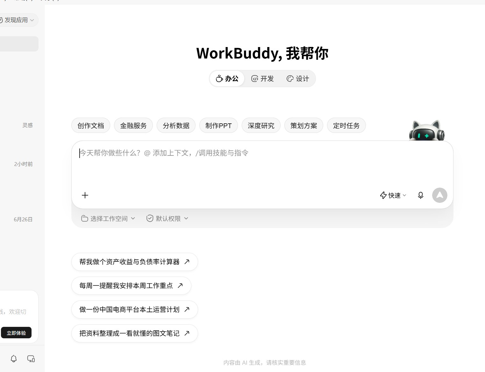
1283×383 一张图：左横右方。封面不进正文。文件夹授权出周报表主题，无封面标题文字。
有一天，朋友把六个销售表丢进同一个文件夹，配文：「表头各写各的，我又要手工粘一周」。有的叫「业务日期」，有的叫 Date；仓库一会儿「华东 仓」，一会儿「华东仓（上海）」。我说：别一张张挂了——把整个文件夹授权给 WorkBuddy，就当一堆表所在的本地目录用。
我是老李。这是《WorkBuddy 脏活手册》第 2 招。下面用的是示例数据（虚构 3 仓库 × 2 渠道，约 174 行），免费档就能跑。结论先放前头：按下面顺序点完，授权目录后约 3 分钟，174→168，周看板金额合计 18,611.50，异常 9 条，能交差。
下面按真实界面点击顺序带你走一遍。每一步只做一件事：【要做什么】→ 对照红框截图 → 【要输入/要点的】；需要打字的地方，提示词放在灰底框里整段复制。中间不插闲笔。
【要做什么】
在电脑上建一个文件夹，把示例 csv/xlsx 丢进去（或换成你自己的周表）。这一步在系统资源管理器里做，还没进软件。
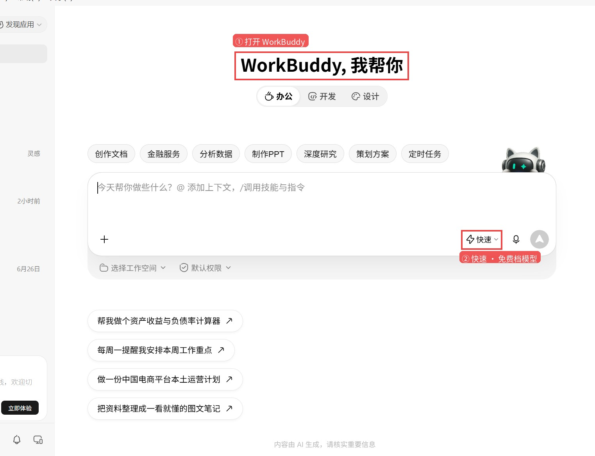
示例：经营看板-投入口里 6 个文件，表头 5 种写法（虚构数据）
【要建成的路径 · 可复制】
文件夹名：经营看板-投入口。完整路径写成（示例名）：
C:\Users\laoli\projects\workbuddy-folder-warehouse\经营看板-投入口
步骤 1 · 打开 WorkBuddy
【要做什么】
装好并打开 WorkBuddy V5.8.2，看到主界面「WorkBuddy, 我帮你」。
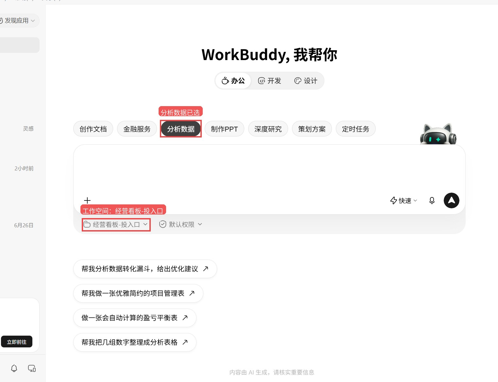
真屏摄：红框①标题区＝已打开；红框②「快速」＝免费档模型入口
步骤 2 · 选免费档模型
【要选的模型】输入框右下角「快速」
点 快速，条目标签选 快速 · Deepseek-V4.1-Flash。免费档即可，不用付费。（对照上图红框②）
步骤 3 · 点「办公」→「分析数据」
【要做什么】
先点顶栏「办公」，再点下面胶囊按钮「分析数据」。
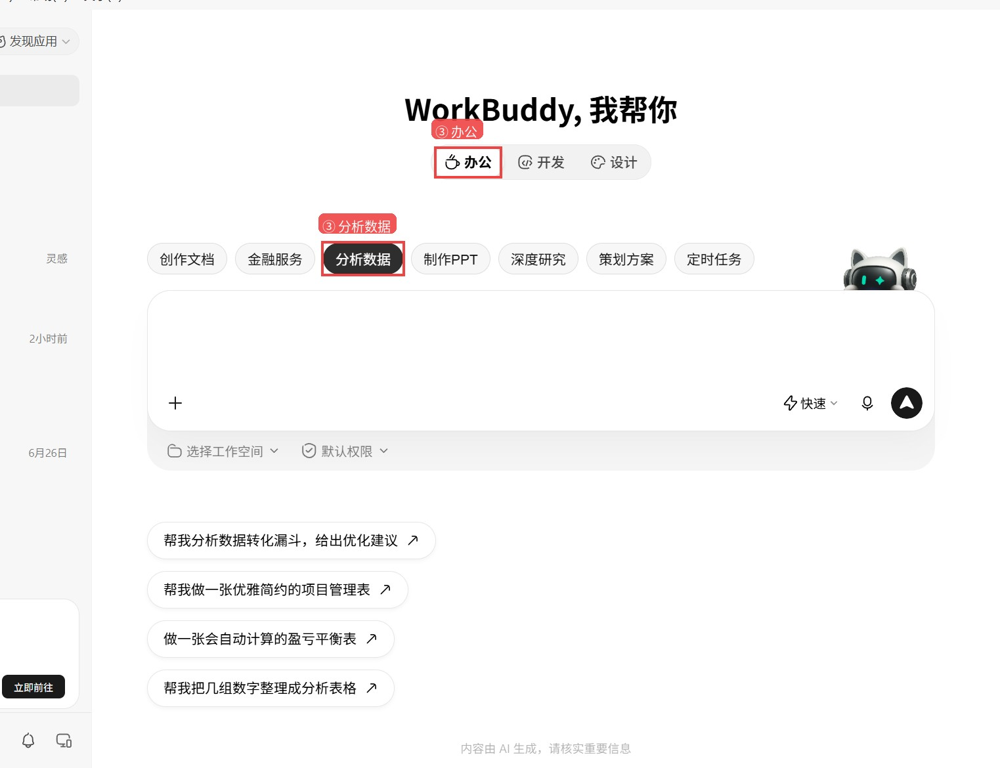
真屏摄：红框分别框住「办公」与已选中的「分析数据」
【要点的按钮】办公 → 分析数据（对照上图红框③）
步骤 4 · 选择工作空间 / 打开本地文件夹
【要做什么】
点输入框下方的「选择工作空间」→ 选「打开本地文件夹」→ 在系统弹窗里选中刚才建好的 经营看板-投入口。
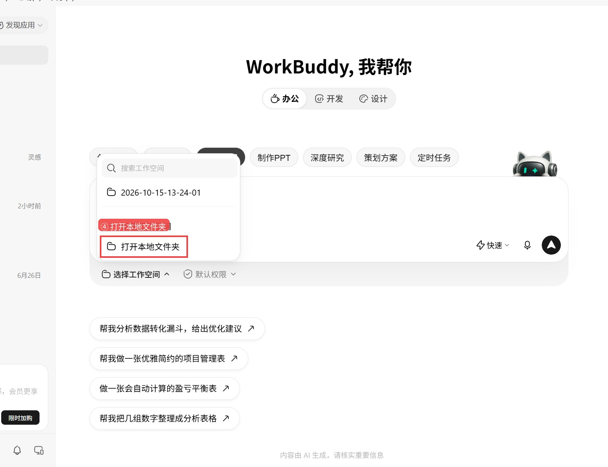
真屏摄：红框框住下拉菜单里的「打开本地文件夹」
【要点的按钮】选择工作空间 → 打开本地文件夹 → 选中那一堆表所在的文件夹。系统弹窗地址栏可直接贴完整路径再回车。
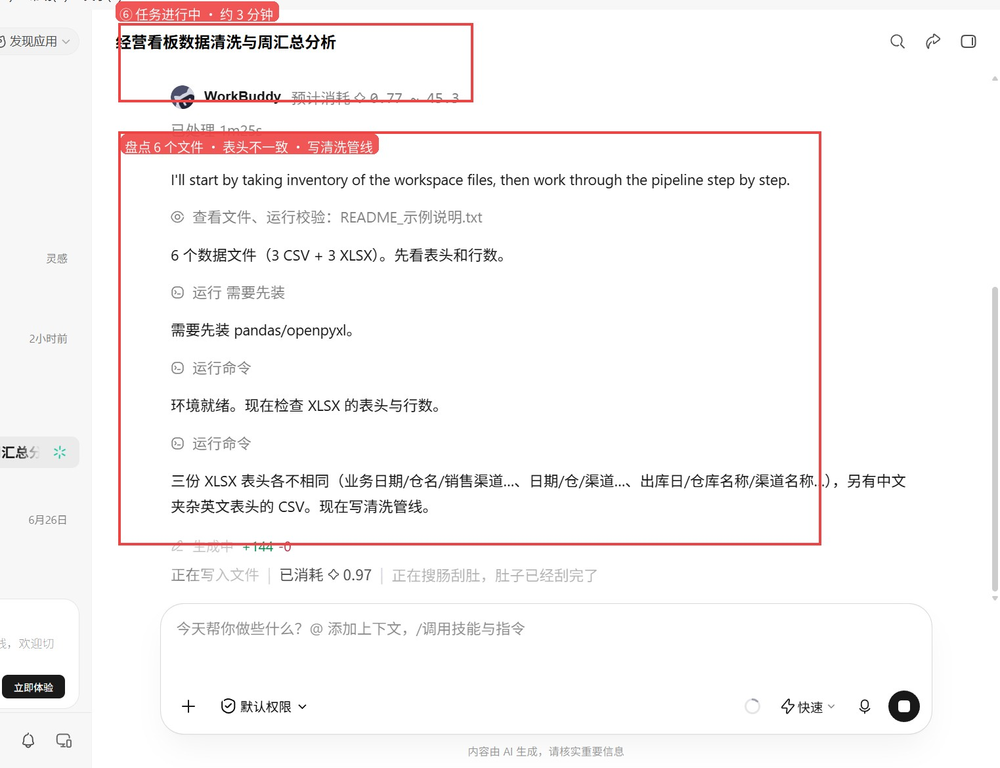
真屏摄：红框框住工作空间芯片「经营看板-投入口」；上方「分析数据」已选
【要确认的样子】
输入框下方文件夹名变成 经营看板-投入口 才算选对（对照上图）。
【广告位1】
步骤 5 · 粘贴提示词并发送
【要做什么】
把下面灰底框整段复制进屏幕下方大输入框，点发送。这是五步一条龙（盘点→对齐→合并→周看板→异常），普通人一次贴完即可。
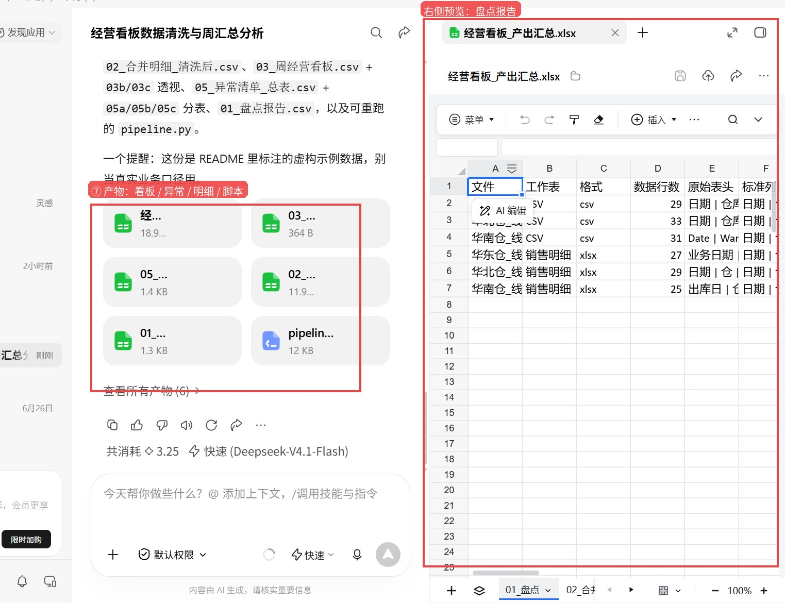
真屏摄：红框框住已粘贴的提示词输入区，以及右下角「发送」
【要粘贴的地方】聊天输入框
屏幕下方大输入框。确认工作空间仍是 经营看板-投入口，再粘贴。
【要输入的提示词 · 完整复制】（五步一条龙）
请把当前工作空间「经营看板-投入口」当作一堆表所在的本地文件夹来用（这是示例数据，虚构的 3 仓库×2 渠道周销售）。按下面顺序做完，每一步简短说明结果，产物另存到同级 outputs 文件夹（没有就新建），不要覆盖文件夹里的原文件： 1）盘点：列出目录里有哪些 csv/xlsx，每个多少行、表头是什么； 2）对齐表头：把各文件表头统一成标准列：日期、仓库、渠道、SKU、品名、销量、单价、金额、备注（英文表头也要映射过来）； 3）合并清洗：合并成一张明细；去掉完全重复行；日期统一成 YYYY-MM-DD；仓库名归一成 华东仓/华南仓/华北仓；渠道归一成 线上/线下；用「销量×单价」重算金额，对不上的列出「金额异常清单」； 4）出周看板：按 仓库×渠道 汇总销量与金额，另存一张「周经营看板」； 5）异常清单：把金额异常、空金额、无法识别的仓库/渠道单独成表。 做完后告诉我：原文件数、合并前总行数、去重后行数、看板汇总之和、异常多少条。
（「提示词」= 你打给软件看的那段说明。把上面灰底框里的字整段复制，粘到聊天输入框里即可。）
步骤 6 · 等它跑完（约 3 分钟）
【要做什么】
点发送后别乱动。界面会显示「进行中 / 已处理 ×分×秒」。实测 15:55→15:58，大约 2 分 57 秒。
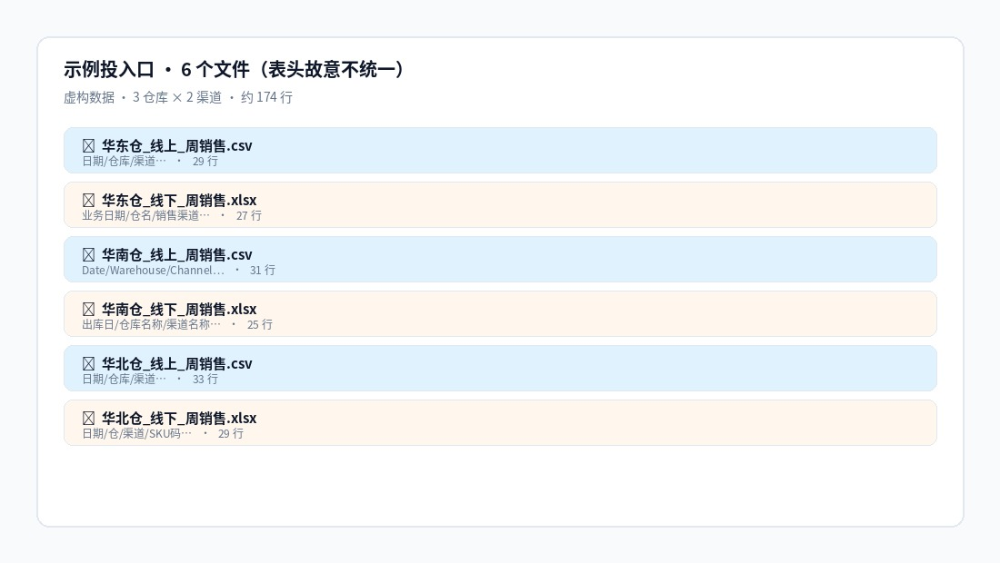
真屏摄：红框框住进行中状态，以及盘点 6 文件 / 表头不一致 / 写清洗脚本
【要看到的样子】
进度里会出现：发现 6 个文件、表头各不相同、开始写清洗脚本。等到出现「已完成」和产物卡片，再进下一步。
步骤 7 · 打开 outputs 看结果
【要做什么】
在示例文件夹同级打开 outputs 文件夹（软件也会列出产物卡片）。文件夹里的原文件不会被覆盖。
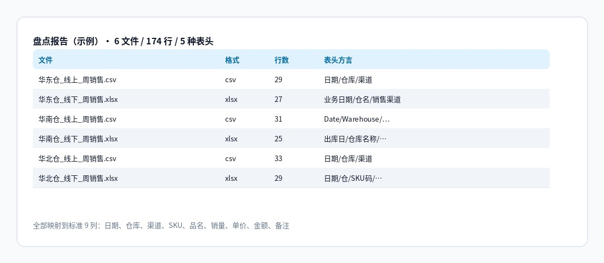
真屏摄：红框框住产物列表与右侧盘点预览；另有可重跑的 pipeline.py
【要打开的结果 · 输出路径】C:\Users\laoli\projects\workbuddy-folder-warehouse\outputs\（文件夹里的原文件不会被覆盖）
示例这趟交出来的关键数字：
• 盘点：6 个文件、共 174 行；表头 5 种写法 → 标准 9 列
• 合并清洗：174 → 168 行；仓库/渠道已归一；金额按销量×单价重算
• 周看板：销量合计 1,118，金额合计 18,611.50
• 异常：共 9 条（空金额 6 + 金额对不上 3）
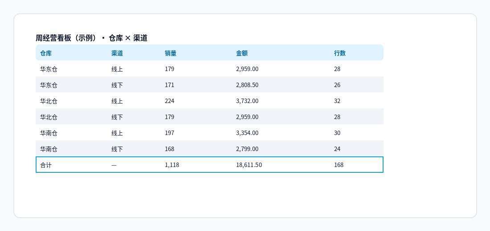
示例盘点：文件 / 格式 / 行数 / 表头方言一览
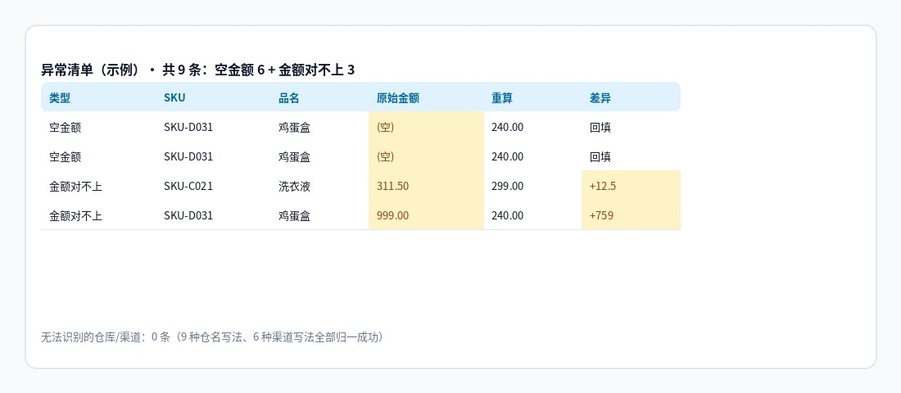
示例周看板：三仓×两渠道，合计销量 1,118 / 金额 18,611.50
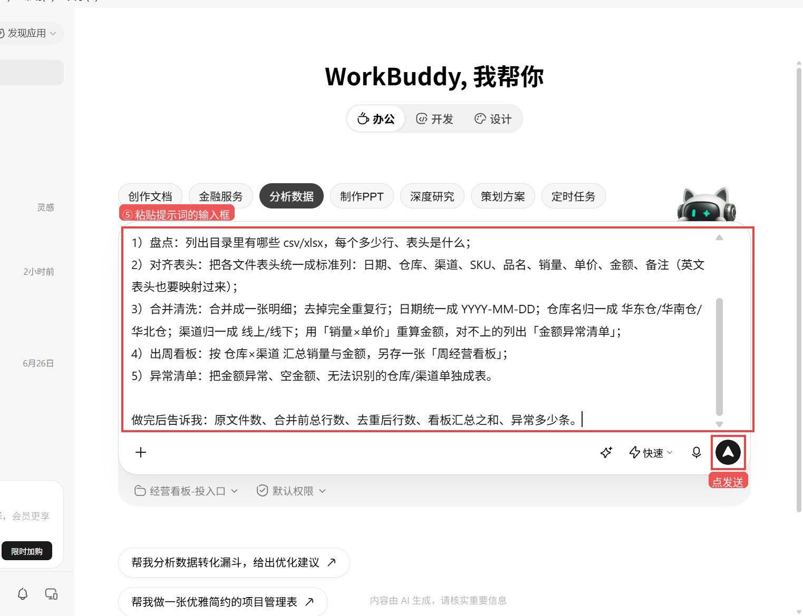
示例异常：空金额回填与金额差额（黄底为异常格）
【广告位2】
上面「步骤 5」一条龙够用。若你想一步一步看它干活，也可以按下面 1→5 依次粘贴发送（每条跑完再发下一条）。前提仍是：步骤 1～4 已做完，工作空间＝经营看板-投入口。
【要粘贴的地方】仍是聊天输入框
每条发完等「已完成」，再贴下一条。产物都进 outputs。
【拆分提示词 1 · 只盘点】
请盘点当前工作空间目录里的 csv/xlsx：列出文件名、行数、表头，并说明哪些表头写法不一致。不要改原文件。产物另存到同级 outputs（没有就新建）。
（「提示词」= 你打给软件看的那段说明。把上面灰底框里的字整段复制，粘到聊天输入框里即可。）
【拆分提示词 2 · 对齐表头】
请把目录里各表表头对齐成标准列：日期、仓库、渠道、SKU、品名、销量、单价、金额、备注。英文表头也要映射。先给我一张对照表，再写入 outputs，不要覆盖文件夹里的原文件。
（「提示词」= 你打给软件看的那段说明。把上面灰底框里的字整段复制，粘到聊天输入框里即可。）
【拆分提示词 3 · 合并清洗】
请合并成一张明细；去掉完全重复行；日期统一成 YYYY-MM-DD；仓库名归一成 华东仓/华南仓/华北仓；渠道归一成 线上/线下；用「销量×单价」重算金额。另存到 outputs，不要覆盖文件夹里的原文件。
（「提示词」= 你打给软件看的那段说明。把上面灰底框里的字整段复制，粘到聊天输入框里即可。）
【拆分提示词 4 · 出周看板】
在已清洗明细上，按 仓库×渠道 汇总销量与金额，另存「周经营看板」到 outputs。不要覆盖文件夹里的原文件。
（「提示词」= 你打给软件看的那段说明。把上面灰底框里的字整段复制，粘到聊天输入框里即可。）
【拆分提示词 5 · 异常清单】
请把金额异常、空金额、无法识别的仓库/渠道单独成表，另存到 outputs。不要覆盖文件夹里的原文件。做完后告诉我异常一共多少条。
（「提示词」= 你打给软件看的那段说明。把上面灰底框里的字整段复制，粘到聊天输入框里即可。）
① 先做步骤 4，再发提示词——没选工作空间就让它「读目录」，它会瞎猜路径。
② 系统弹「选择文件夹」时，地址栏贴完整路径再回车，比一层层点更快。
③ 提示词里写清「不要覆盖文件夹里的原文件」；它会新建 outputs 放产物。
④ 表头有英文、有「业务日期/出库日」混用时，把标准列名写死，少返工。
⑤ 异常清单要分开看：空金额往往是漏填，金额对不上才是真录错。
⑥ 示例归示例，别拿虚构数当真实业务口径；对外路径写成 C:\Users\laoli\...，别晒真实本机用户名。
这趟怎么看：免费档 + Deepseek-V4.1-Flash，在示例「3 仓 × 2 渠道」文件夹上，约 3 分钟完成盘点→对齐→合并→周看板→异常清单。判定：可直接交差。觉得有用的话，点个关注「老李的AI江湖」，顺手转发或点个赞。
关注公众号
老李的AI江湖
供应链老登的 AI 江湖，专聊能上手的
点关注顺手转发点个赞
下期见
WorkBuddy 本地文件夹 周报表 经营看板 加班粘表 老李的AI江湖